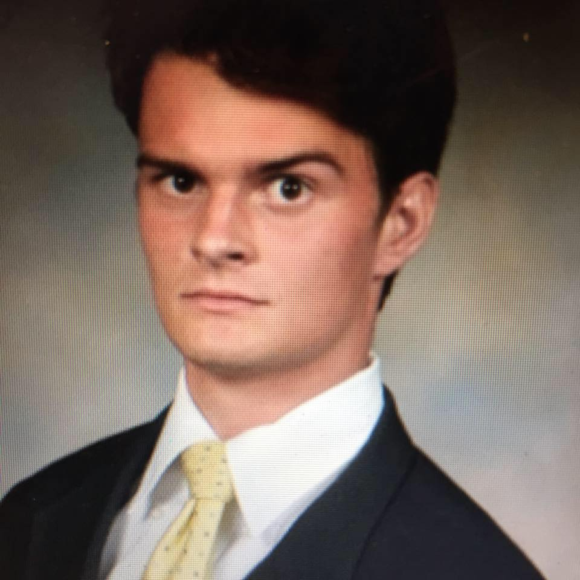

About Me
 My name is Billy Hodes and I am 21 years old. I was born in Fairhope, Alabama and have lived in Kansas City, Missouri since I was 1. I graduated from Rockhurst High School in 2015 and went on to study civil engineering at the University of Missouri. After two years at Mizzou, I decided that civil engineering was not for me and returned home. Now I am looking to become a web developer and am enrolled in a coding bootcamp at KU. My interests and hobbies include painting, sports, traveling, and reading.